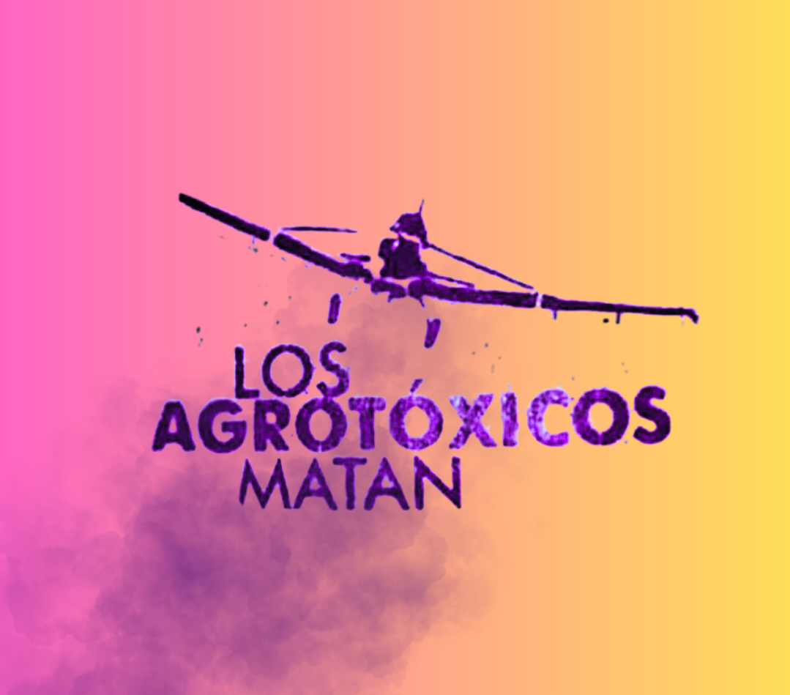
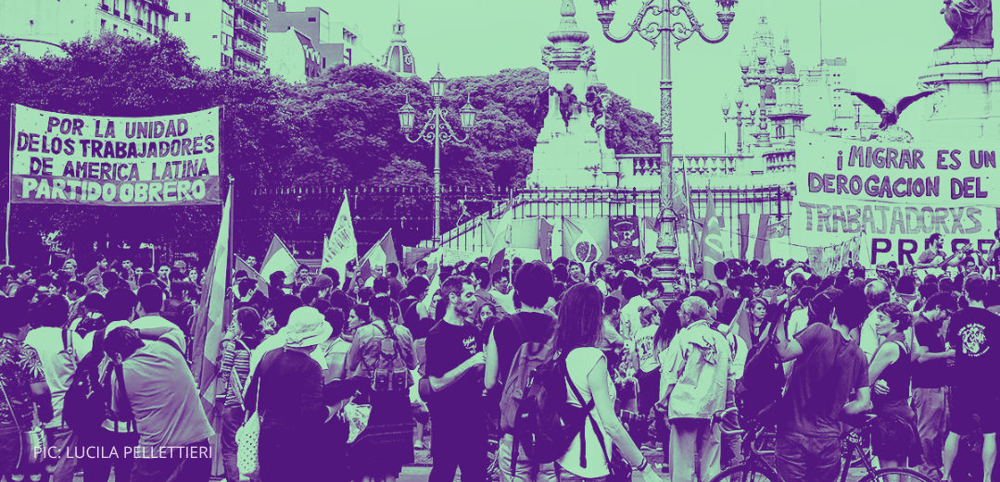
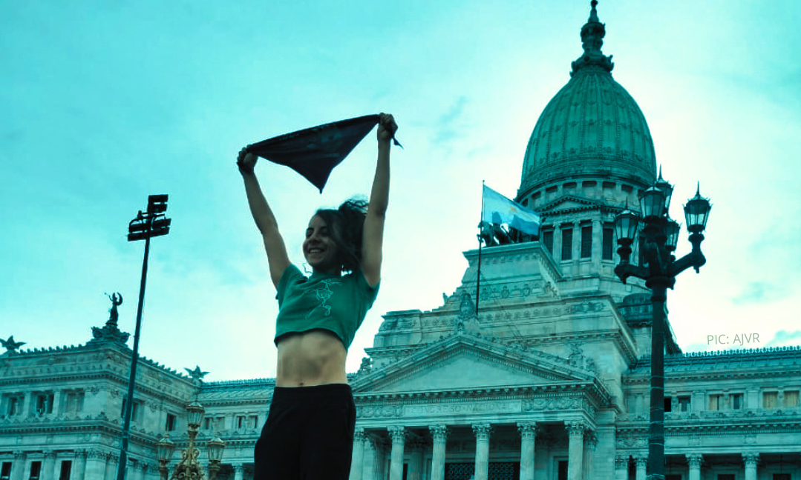
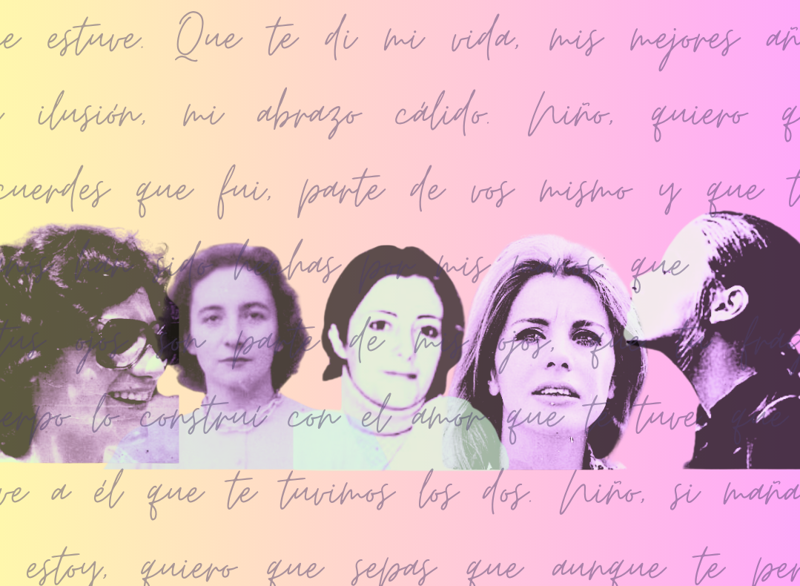
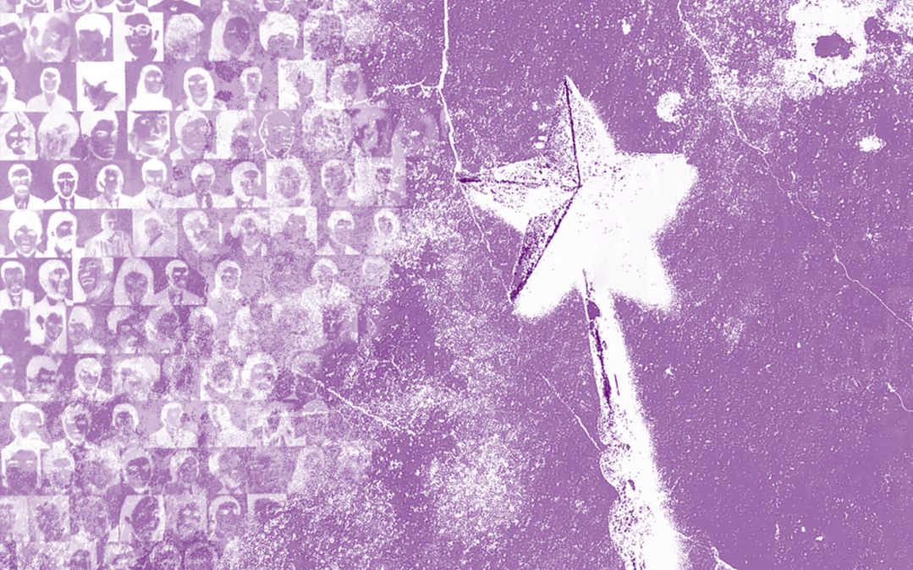
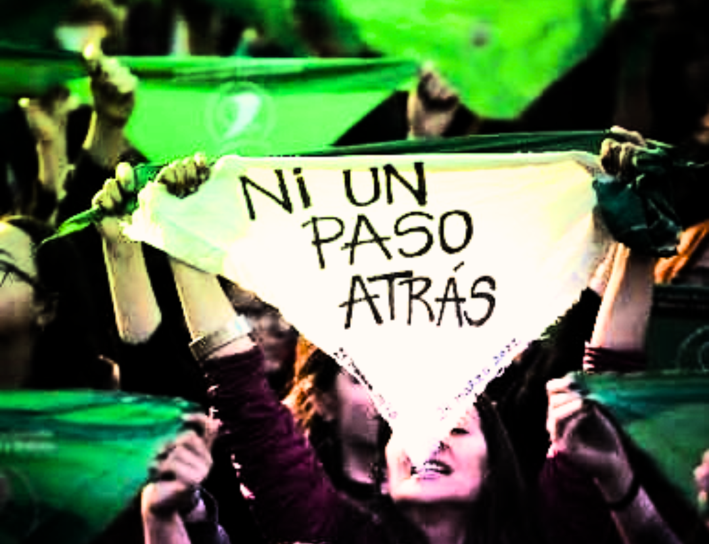

EDITORIAL
EDITORIAL
Más que nunca encontrarnos
El editorial de esta edición analiza el uso analiza la necesidad de volvernos a encontrar en las calles, en las asambleas y talleres. Poner en palabras los futuros que aún nos quedan por construir, un futuro donde ninguna científica sea perseguida, dónde nuestras pibas puedan proyectarse sin miedo. Vamos a Córdoba para hacer oír nuestras voces, fortalecer nuestras luchas y construir una salida desde abajo, independiente de los gobiernos y de quienes pretenden que paguemos la crisis que ellos mismos generan. Porque si el capital y el poder político nos quieren aisladas y agotadas, nosotras respondemos encontrándonos, organizándonos y luchando juntas.
¡No a la exoneración de Virginia Aparicio!
¡Basta de persecución a las trabajadoras!
¡No a la exoneración de Virginia Aparicio!
¡Basta de persecución a las trabajadoras!
ARTÍCULOS DE LA EDICIÓN Septiembre 2026

Artículo
Cuando medir se vuelve incómodo: SPRINT, bioética y el deber de defender una ciencia digna
Nair fue voluntaria del proyecto internacional SPRINT, financiado por la Unión Europea para estudiar la exposición a plaguicidas desde una perspectiva de Una Salud, entendiendo que la salud humana, animal y ambiental son dimensiones inseparables de un mismo problema. Ella fué una de los 73 voluntarios Argentinos, con presencia de múltiples pesticidas en sangre. Hoy frente a la persecución de la Dra. Virginia Aparicio, Nair nos invita a pensar la importancia de construir una ciencia digna.

ARTÍCULO
El anarcocapitalismo contra las mujeres migrantes: sus derechos en jaque
Marta Guerreño Lopez y Ana Paula Penchaszadeh analizan cómo el DNU 366 de mayo de 2025 firmado por Javier Milei desmanteló el derecho universal a la salud que garantizaba la Ley de Migraciones 25.871. A partir de un diálogo de más de una década, las autoras repasan las restricciones provinciales previas y muestran cómo la combinación de barreras nacionales y provinciales golpea con especial crudeza a las mujeres migrantes, que enfrentan mayores tasas de informalidad, peores salarios y sobrecarga de cuidados.

ARTÍCULO
Mujeres al poder: ¿qué mujeres y para qué?
Ariadna Gallo, investigadora del CONICET en el IEALC, analiza la representación femenina en el Congreso argentino con una mirada de clase, poniendo el foco en la disputa por el aborto legal. El artículo nos propone pensar el perfil de las mujeres que llegan a las bancas. Este perfil homogéneo que persiste incluso después de la Ley de Paridad de 2017, evidenciando que la puerta se abrió pero no para todas. A partir del recorrido parlamentario de la IVE, la autora plantea que la representación descriptiva no garantiza la representación sustantiva, y que la representación sustantiva tampoco alcanza por sí sola para una agenda emancipatoria.

ENTREVISTA
Escritoras en Argentina de los años 70’s: investigar un pasado que aún interpela
Entrevista de Silvana Rodriguez Oro a la investigadora Agustina Catalano para la Gaceta Clara Zetkin, una de las 400 becarias postdoctorales despedidos por el CONICET en julio de este año. Durante su beca, radicada en la Universidad Nacional de Mar del Plata, investigó las escrituras y producciones artísticas de mujeres que fueron secuestradas y desaparecidas por la última dictadura militar en nuestro país. Esta investigación postdoctoral se publicará en los próximos meses por la editorial Tren En Movimiento, con el título Las armas cotidianas. Escritoras argentinas entre revoluciones y dictaduras.

RESEÑA
De la mala magia al aquelarre
En cada poesía y en cada cuento, Patricia Toni nos trae las voces de cada hija que duele, y retoma la palabra como hacemos en cada ronda, en cada asamblea. Este hermoso libro nos recuerda heridas que no cierran, pero también nos recuerda que sólo articulando nuestra voz seremos escuchadas. Porque sabemos que unidas podemos ahuyentar la mala magia, prender la hoguera y quemar el dolor. Este hermoso libro nos recuerda heridas que no cierran, pero también nos recuerda que sólo articulando nuestra voz seremos escuchadas.

NOTA
ABORTO LEGAL, SEGURO Y GRATUITO: más de 30 años de lucha
El artículo recorre más de tres décadas de lucha por el aborto legal en Argentina, desde la penalización de 1886 hasta la sanción de la Ley 27.610 en 2020. Repasa los debates internos del movimiento feminista, la conformación de la Campaña Nacional en 2005, el fallo FAL de 2012, el caso Belén y el protocolo ILE de 2015.
El texto destaca la irrupción de la Marea Verde en 2018, que tras la media sanción en Diputados y el rechazo en Senado impulsó la despenalización social del aborto. Finalmente, la presión popular logró la sanción de la ley en diciembre de 2020, una victoria histórica contra el clero y el Estado capitalista.